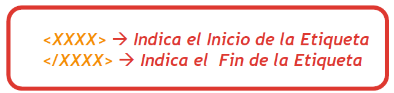
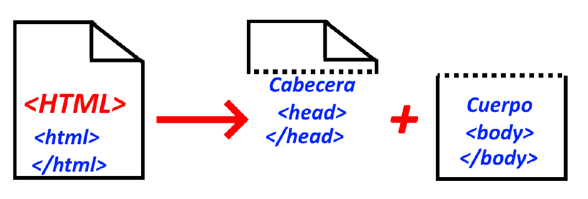

Definición de HTML y Página Web
Un documento HTML, es un documento de Lenguaje de Marcado o de Marcas.
Esto quiere decir, que es un lenguaje de etiquetas o tags, que nos permite
crear documentos en un texto plano compatible con distintos dispositivos y que
sólo necesitan para abrirse un navegador web.
Así, el lenguaje HTML será la base de nuestras páginas web.
HTML: HyperText Markup Language (Lenguaje de Marcado de HyperTexto)
Definición de Página Web
- Es un documento de texto con marcas (etiquetas)
- Estas etiquetas tienen apertura y cierre, y nos permitirá poder
crear / insertar información tal como: texto, imágenes, vídeos,
tablas, etc.
- Estas marcas también se les llaman etiquetas como hemos dicho,
y su estructura es: etiqueta de apertura y etiqueta de cierre
(esta última viene dada por una barra obliqua que indica que es de cierre)
-

- Las páginas web, están pensandas para ser vistas mediante los navegadores
web, de ahí que sean compatibles con todos los dispositivos multimedia.
- Los navegadores son capaces de interpretar las marcas y presentar el
documento tal y como el diseñador/autor lo ha creado.
Etiquetas o Tags en HTML
Como hemos comentado, en HTML utilizaremos etiquetas o tags para establecer
la estructura y contenido de nuestras páginas webs.
En base a esto, podemos establecer que:
-
Etiqueta de Apertura: sirve para indicar que vamos a empezar a utilizar
/insertar contenido de nuestra página web. Viene dada por el símbolo de
menor que "<" y con el nombre de la etiqueta y el símbolo de mayor que
">" .
-
Etiqueta de Cierre: sirve para indicar que vamos a finalizar una etiqueta
que hemos utilizado para crear contenido de nuestra página web. Viene dada por el símbolo de
menor que "<" seguido de la barra invertida "/" y con el nombre de la etiqueta y el símbolo de mayor que
">" .
Ejemplo de Etiqueta en HTML
Esta es una etiqueta de salto de párrafo en HTML
Este es otro salto de párrafo en HTML
En HTML, las etiquetas ya están predefinidas, y el contenido que queremos mostrar en nuestra web,
deberá de ir entre las etiquetas de apertura y de cierre, mostrándose únicamente el contenido indicado
entre las mismas.
Todas las etiquetas en HTML, tendrán una etiqueta de apertura y de cierre, pero en algunos casos, podremos
tener lo que se conocen como monoetiquetas. Es una etiqueta que no tiene equita de cierre como tal.
Entre los que podemos utilizar destacamos las siguientes: img, hr, br.
Atributos en HTML
Un atributo en HTML, se utilizará para dar una serie de características a una etiqueta.
Este atributo puede ser de distintos tipos o formas, y se utilizarán según se vayan necesitando
en nuestras etiquetas.
Comentarios en HTML
Un comentario en HTML, se utiliza para dar información a los programadores de qué hemos hecho, qué es lo
que puede hacer una etiqueta o estructura, etc.
Los comentarios en HTML, NO se visualizarán en el documento web, sino que sólo se verán si exploramos
el archivo.
Su estructura es la siguiente: " seguido de "-->"
Estructura de una página web
Los documentos HTML, están divididos en dos zonas principales:
- Cabecera (Head): Donde se incluyen el título, idioma y otros elementos de nuestra página web
- Cuerpo (Body): La zona del documento donde vamos a incluir todos los elementos de nuestra web:
imágenes, texto, vídeos, audios, tablas, formularios, etc.

Importante: Cuando vayamos a crear un documento HTML, lo debemos de crear con la extensión
.html
Si no lo creamos con esta extensión, no nos funcionara la web.